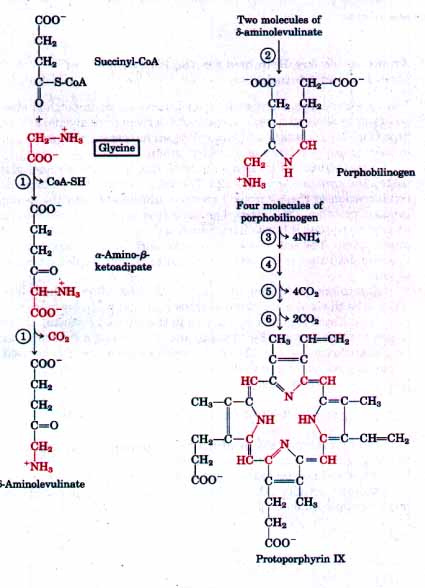
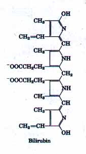
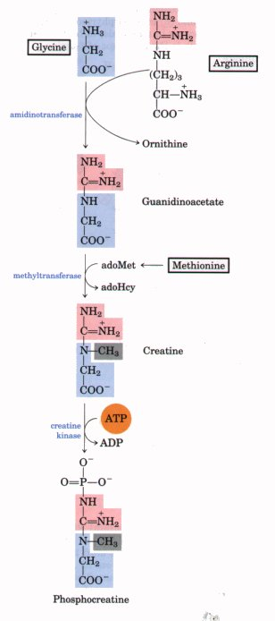
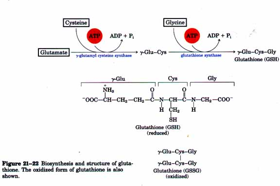
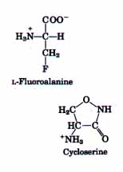
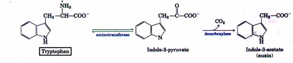
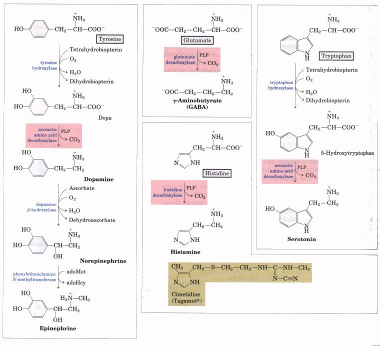
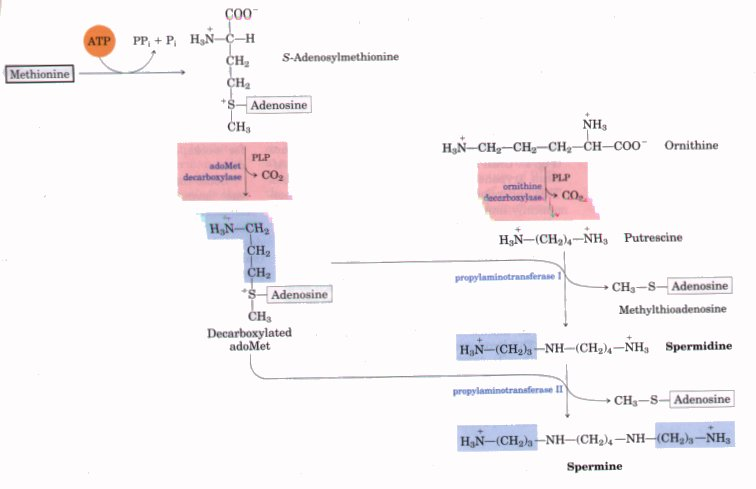

In addition to their role as the building blocks of proteins, amino acids are precursors of many specialized biomolecules, including hormones, coenzymes, nucleotides, alkaloids, cell-wall polymers, porphyrins, antibiotics, pigments, and neurotransmitters-all of which serve essential biological roles. A number of pathways in which amino acids serve as precursors for other biomolecules will be described here.
The biosynthesis of porphyrins, for which glycine is a major precursor, is our first example because of the central importance of the porphyrin nucleus in heme proteins such as hemoglobin and the cytochromes, and the Mg2+-containng porphyrin derivative chlorophyll. The porphyrins are constructed from four molecules of the nonopyrrole derivative porphobilinogen (Fig. 21-20). In the first reaction, glycine reacts with succinyl-CoA to yield α-amino-β-ketoadipate, which is then decarboxylated to give δ-aminolevulinate. Two molecules of δ-aminolevulinate condense to form porphobilinogen, and four molecules of porphobilinogen come together to form protophorphyrin, through a series of complex enzymatic reactions. The iron atom is incorporated after the protoporphyrin has been assembled. Porphyrin biosynthesis is regulated by the concentration of the heme irotein product, such as hemoglobin, which can serve as a feedback nhibitor of early steps in porphyrin synthesis. In humans, genetic defects of certain enzymes in the biosynthetic athway from glycine to porphyrins lead to the accumulation of speific porphyrin precursors in erythrocytes, in body fluids, and in the ver. These genetic diseases are known as porphyrias. In one of the orphyrias, which affects mainly erythrocytes, there is an accumulaion of uroporphyrinogen I, an abnormal isomer of a precursor of protoorphyrin. It stains the urine red and causes the teeth to fluoresce . |
 Figure 21-20 Biosynthesis of protoporphyrin IX, the porphyrin of hemoglobin and myoglobin. The atoms furnished by glycine are shown in red. The remaining carbon atoms are derived from the succinyl group of succinyl-CoA. Pathway enzymes are: 1 : d-aminolevulinate synthase, 2 : porphobilinogen synthase, 3 : uroporphyrinogen synthase, 4 : uroporphyrinogen III cosynthase, 5 : uroporphyxznogex decarboxylase, and 6 : coproporphyrinogen oxidase This pathway occurs in mammals; in bacteria and plants, glutamate is the precursor of 8-aminolevulinate. |
Strongly in ultraviolet light and the skin to show abnormal sensitivity to sunlight. Because insufficient heme is synthesized, patients wit this disease are anemic, shy away from sunlight, and have a propen- sity to drink blood. This condition may have given rise to the vampix myths in medieval folk legend. Another type of porphyria causes accu- mulation of porphobilinogen in the liver, as well as intermittent neuro- logical and behavioral aberrations.
| The iron-porphyrin or heme group of hemoglobin, released from dyin erythrocytes in the spleen, is degraded to yield free Fe3+ and ult mately bilirubin, a linear (open) tetrapyrrole derivative. Bilirubi binds to serum albumin and is transported to the liver, where it transformed into the bile pigment bilirubin diglucuronide, which sufficiently water soluble to be secreted with other components of bi into the small intestine. Impaired liver function or blocked bile secr tion causes bilirubin to leak into the blood, resulting in a yellowing the skin and eyeballs, a general condition called jaundice. Determin tion of bilirubin concentration in the blood is useful in diagnosing underlying liver disease. |  |
Amino Acids Are Required for the Biosynthesis of Creatine and GlutathionePhosphocreatine, derived from creatine, is an important energy reservoir in skeletal muscle. Creatine is derived from glycine and arginine (Fig. 21-21), and methionine plays an important role (as S-adenosylmethionine) as donor of a methyl group. Glutathione (GSH) is a tripeptide derived from glycine, glutamate, and cysteine (Fig. 21-22). The first step in its synthesis is a condensation of the y-carboxyl group of glutamate with the a-amino group of cysteine. The carboxyl group is first activated by ATP to form an acyl phosphate intermediate, which is then attacked by the cysteine amino group. The second step is similar, with the ?carboxyl group of cysteine activated to an acyl phosphate to permit condensation with glycine. Glutathione is present in virtually all cells, often at high levels, and can be thought of as a kind of redox buffer. It probably helps maintain the sulfhydryl groups of proteins in the reduced state and the iron of heme in the ferrous (Fe2+) state, and it serves as a reducing agent for glutaredoxin (see Fig. 21-32). Its redox function can also be used in removing toxic peroxides that form in the course of growth and metabolism under aerobic conditions: 2 GSH + R-O-O-H ~ GSSG + H20 + R-OH This reaction is catalyzed by glutathione peroxidase, a remarkable enzyme in that it contains a covalently bound selenium (Se) atom in the form of selenocysteine (see Fig. 5-8). The selenium is essential for the enzyme's activity. The oxidized form of glutathione (GSSG) contains two molecules of glutathione linked by a disulfide bond (Fig. 21-22). |
 Figure 21-21 Biosynthesis of creatine and phos- phocreatine. Creatine is made from three amino acids: glycine, arginine, and methionine. This pathway shows the versatility of amino acids as precursors in the biosynthesis of other nitrogenous biomolecules . |

| Although n-amino acids do not generally occur in proteins, they do serve some special functions in the structure of bacterial cell walls and peptide antibiotics. The peptidoglycans (see Fig. 11-19) of bacteria contain both n-alanine and n-glutamate. n-Amino acids arise directly from the r. isomers by the action of amino acid racemases, which have pyridoxal phosphate as a required cofactor (see Fig. 17-7). Amino acid racemization is uniquely important to bacterial metabolism, and enzymes such as alanine racemase represent prime targets for pharmaceutical agents. One such agent,L-fluoroalanine, is being tested as an antibacterial drug. Another, cycloserine, is already used to treat urinary tract infections and tuberculosis. Both inhibitors also affect some other PLP-requiring enzymes. |  |
Phenylalanine, tyrosine, and tryptophan are converted into a variety of important compounds in plants. The rigid polymer lignin is derived from phenylalanine and tyrosine. It is second only to cellulose in abundance in plant tissues. The structure of lignin is complex and not well understood. Phenylalanine and tyrosine also give rise to many commercially significant natural products, including tannins that inhibit oxidation in wines; alkaloids such as morphine that have potent physiological effects; and flavor components of products such as cinnamon oil, nutmeg, cloves, vanilla, and cayenne pepper.
Tryptophan gives rise to the plant growth hormone, indole-3acetate or auxin (Fig. 21-23). This molecule has been implicated in the regulation of a wide range of biological processes in plant cells.

Figure 21-23 Biosynthesis of indole-3-acetate (anxin).
Many important neurotransmitters are primary or secondary amines derived from amino acids in simple pathways. In addition, some polyamines that are complexed with DNA are derived from the amino acid ornithine. A common denominator of many of these pathways is amino acid decarboxylation, another reaction involving pyridoxal phosphate (see Fig. 17-7).
The synthesis of some neurotransmitters is illustrated in Figure 21-24. Tyrosine gives rise to a family of catecholamines that includes dopamine, norepinephrine, and epinephrine. Levels of catecholamines are correlated with (among other things) changes in blood pressure in animals. The neurological disorder Parkinson's disease is associated with an underproduction of dopamine, and it has been treated
by administering L-dopa. An overproduction of dopamine in the brain is associated with psychological disorders such as schizophrenia. Glutamate decarboxylation gives rise to y-aminobutyrate (GABA), an inhibitory neurotransmitter. Its underproduction is associated with epileptic seizures. GABA is used pharmacologically in the treatment of epilepsy and hypertension. Another important neurotransmitter, serotonin, is derived from tryptophan in a two-step pathway.

Figure 21-24 Some neurotransmitters derived from amino acids. The key biosynthetic step is the same in each case: a PLP-dependent decarboxylation (shaded in red). Cimetidine (shaded beige), a histamine analog, is used to treat duodenal ulcers.
Histidine is decarboxylated to form histamine, a powerful vasodilator present in animal tissues. Histamine is released in large amounts as part of the allergic response and it also stimulates acid secretion in the stomach. A growing array of pharmaceutical agents are being designed to interfere with either the synthesis or action of histamine. A prominent example is the histamine receptor antagonist cimetidine, also known as Tagamet? Cimetidine is a structural analog of histamine; it promotes healing of duodenal ulcers by inhibiting secretion of gastric acid.

Figure 21-25 Biosynthesis of spermidine and spermine. The PLP-dependent decarboxylation steps are shaded. In these reactions, S-adenosylm thionine (in its decarboxylated form) acts as a source of propylamino groups.
Polyamines such as spermine and spermidine, used in DNA packaging, are derived from methionine and ornithine by the pathway in Figure 21-25. The ilrst step is the decarboxylation of ornithine, a component of the urea cycle and a precursor of arginine (Fig. 21-9). Ornithine decarboxylase is a PLP-requiring enzyme and is the target of several powerful inhibitors developed commercially as pharmaceutical agents (Box 21-l, pp. 716-717).